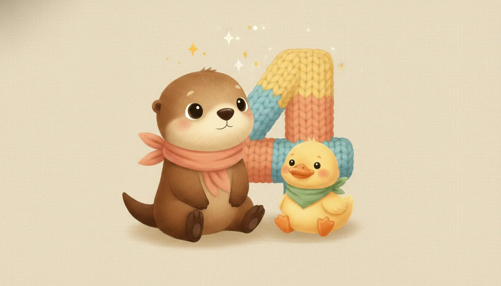
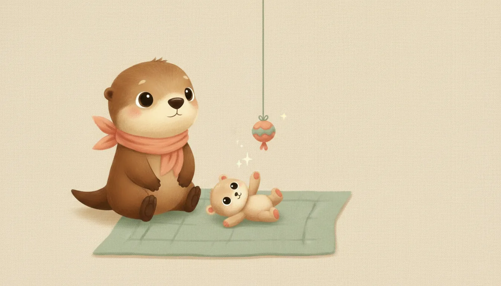
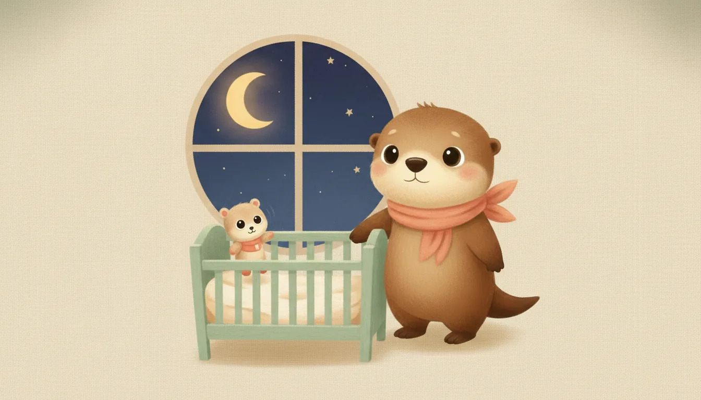
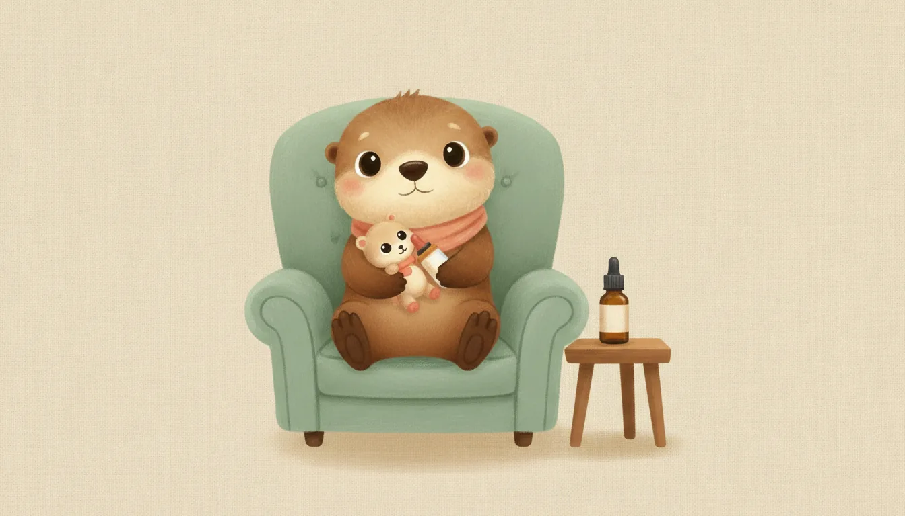
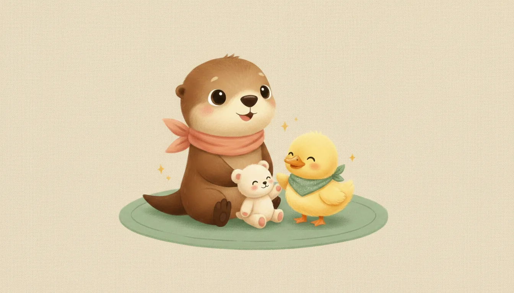
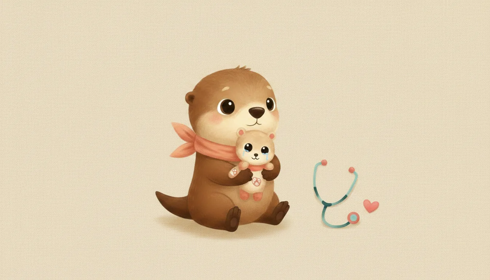

Ebeveynler için · Ay Ay Bebek Rehberi
4 aylık bebek: bu ay sizi ne bekliyor?
4. ay, elleriyle dünyayı keşfetmeye başladığı aydır — bilinçli uzanma ve kavrama gelişir, ikinci aşı randevusu gelir ve bazı bebeklerde geçici bir uyku dalgalanması görülür. Bu sayfa, 4 aylık bir bebeğin neler yaptığını, aşı takviminde sizi nelerin beklediğini ve beyin gelişimini nelerin desteklediğini tek yerde toplar.
Diğer ayların sayfaları hazırlandıkça buraya eklenecek.

Bir bakışta 4. ay
geçici dalgalanma olabilir
hâlâ tek besin
ortalama katı
amaçlı çalışır
KPA + Karma 2. doz

Gelişim: bu ay bebeğiniz ne yapar?
Aşağıdakiler çoğu bebeğin 4. ayın sonuna doğru yaptıklarıdır; her bebek kendi hızında ilerler, biraz erken ya da geç olması çoğu zaman normaldir.
Hareket
- Başını tamamen dik ve sabit tutar; oturtulduğunda başı geriye düşmez.
- Yüzüstünde neredeyse düz kollarına yaslanıp göğsünü yüksekçe kaldırır.
- Ayakları sert bir yüzeye değince kendini yukarı iter, "zıplar" gibi durur.
- Bazı bebekler bu ay yüzüstünden sırtüstüne dönmeyi başarır; 6. aya kadar gelmemesi de normaldir.
Eller, görme ve işitme
- Bir oyuncağa bilinçli olarak uzanır ve kavrar; elini sallayarak çıngırak çalabilir.
- Elini gözüyle takip eder; iki elini orta hatta bir araya getirir.
- Hareket eden nesneleri yukarı-aşağı ve sağa-sola akıcı biçimde izler.
İletişim ve sosyal
- Farklı ihtiyaçlar için farklı ağlama tonları kullanır (açlık, yorgunluk, ağrı).
- Duygularını belirgin biçimde gösterir: mutluluk, hoşnutsuzluk yüzünden okunur.
- Tanıdık yüzleri tanır; bazı bebekler yabancılara karşı ilk temkinli tavrı bu ayda göstermeye başlar.

Uyku: "4 aylık regresyon" gerçek mi?
Toplam uyku süresi günde 12–15 saat civarındadır. Bu ayda birçok ebeveyn "4 aylık uyku regresyonu" diye bilinen bir dönemle karşılaşır: bebeğin uyku döngüsü yenidoğan tipi basit uykudan, yetişkine benzer çok aşamalı bir yapıya geçer. Bu geçiş sırasında gece uyanmaları artabilir — bu geçici ve normal bir nörolojik olgunlaşmadır, bir şeyi yanlış yaptığınız anlamına gelmez. Güvenli uyku kuralları değişmeden devam eder:
- Her uykuda sırtüstü yatırın; beşik boş kalmalı.
- Tutarlı bir yatma rutini (banyo, uyku tulumu, ninni, karanlık oda) bu dalgalanma döneminde özellikle yardımcı olur.
- Aynı odada, kendi yatağında uyumaya devam; aynı yatağı paylaşmayın.
- Bebek kendi kendine yuvarlanabiliyorsa, gece tekrar sırtüstüne çevirmenize gerek yoktur.
Ayrıntı için: Çocuklarda uyku düzeni rehberi.

Beslenme: ne verilir, ne verilmez?
Bu ayda da menü değişmez: anne sütü — istedikçe, günde 6–8 ve üzeri öğün. Bebek yemek yenilen sofraya ilgiyle bakmaya başlayabilir; bu doğaldır ama ek gıda için henüz zaman değildir. Anne sütü yoksa ya da yetmiyorsa mama, hekim önerisiyle ve kutu talimatına birebir uyularak hazırlanır. Günlük 400 IU D vitamini damlasına devam edin.
Bu ayda da asla verilmeyecekler
- Su: Anne sütü ihtiyacı zaten karşılar.
- Bal: 12 aydan önce bebek botulizmi riski taşır.
- İnek/keçi sütü, bitki çayları, şekerli su: Güvenli değildir.
- Her türlü ek gıda: 6. aydan önce sindirim sistemi ve dil itme refleksi hazır değildir; erken başlamak alerji ve boğulma riskini artırır.
Hazır olma belirtileri ve ek gıda dönemi için: Ek gıdaya nasıl başlarız?

Oyun ve beyin gelişimi
Bilinçli uzanma ve kavrama becerisiyle birlikte bu ay oyun çok daha "elle tutulur" hâle gelir. Beyin gelişimi için en güçlü uyaran hâlâ sizsiniz.
- Uzanma ve kavrama pratiği: Yumuşak, kolay tutulabilir oyuncakları erişebileceği mesafeye koyun; uzanıp dokunması ve kavraması göz-el koordinasyonunu geliştirir.
- Farklı dokular: Kumaş, ahşap, silikon gibi farklı yüzeyli güvenli oyuncaklar dokunsal keşfi zenginleştirir.
- Yüzüstü egzersiz (tummy time): Bebek artık düz kollarına yaslanmayı sevebilir; günde toplam 60 dakikaya kadar uzatılabilir.
- Konuşun, söyleyin, okuyun: Bebeğiniz farklı sesler çıkardığında durup karşılık verin — bu "servis-karşılama" beyin mimarisini kurar.
- Ekran: Bu yaşta hâlâ önerilmez; 18–24 aydan önce ekran yalnızca görüntülü aile aramasıyla sınırlı tutulmalıdır.

Bu ayın büyük randevusu: 4. ay aşıları
2026 ulusal aşı takvimine göre 4. ayın sonunda iki aşı uygulanır: KPA (zatürre) 2. doz ve Karma aşının (Beşli karma, DaBT-İPA-Hib) 2. dozu. Bu aşılar aile sağlığı merkezlerinde ücretsizdir. Ayrıntılı takvim için: Hangi ay hangi aşı?
- Aşı sonrası hafif ateş, huzursuzluk ve iğne yerinde kızarıklık beklenen ve genellikle kendiliğinden geçen tepkilerdir.
- Aşı günü ve öncesinde emzirmek, sakin bir ortam ve ten tene temas rahatlatır.
- Randevuya aşı karnesini götürmeyi unutmayın.
Bu ayın kontrol listesi
- Aşılar: KPA 2. doz, Karma aşı 2. doz.
- D vitamini damlasına günlük devam edin.
- Bebeğinizin uzanma-kavrama becerisini ve yuvarlanma denemelerini bir sonraki muayenede paylaşmak üzere not edebilirsiniz.
- Bebek yuvarlanmaya başladıysa alt açma masasında ve yükseklerde asla gözetimsiz bırakmayın.
Ne zaman hekime başvurmalı?
- 38°C ve üzeri ateş: 3 aydan küçük bebekte ateş her zaman acildir — beklemeden hastaneye.
- Emmeyi reddetme, çok zayıf emme veya günde 4'ten az ıslak bez.
- Hiç baş kontrolü olmaması ya da oturtulduğunda başın tamamen geriye düşmesi.
- Bir nesneye hiç uzanmaması, ellerini hiç kullanmıyor gibi görünmesi.
- 6 ayı geçtiği hâlde hiç yuvarlanma denemesi olmaması.
- Aşı sonrası 3 günden uzun süren ateş, aşırı huzursuzluk veya iğne yerinde yayılan kızarıklık-şişlik.
- Dakikada 60'ın üzerinde hızlı solunum, inleme, göğüste çekilmeler, morarma.
Acil bir durumda 112'yi arayın veya en yakın acil servise başvurun. Gece gelişen ateş için: Gece ateş rehberi.

Anneye not
Uyku dalgalanması yaşıyorsanız yalnız değilsiniz — bu dönem birçok ailede görülür ve kalıcı değildir. Kendinizi "geriye gittik" diye yormayın; bebeğinizin beyni tam da olması gerektiği gibi olgunlaşıyor. İki haftadan uzun süren yoğun hüzün, sürekli ağlama isteği ya da bebeğe karşı ilgisizlik hissi doğum sonrası depresyonun işareti olabilir; tedavi edilebilir bir durumdur — hekiminizle paylaşın.